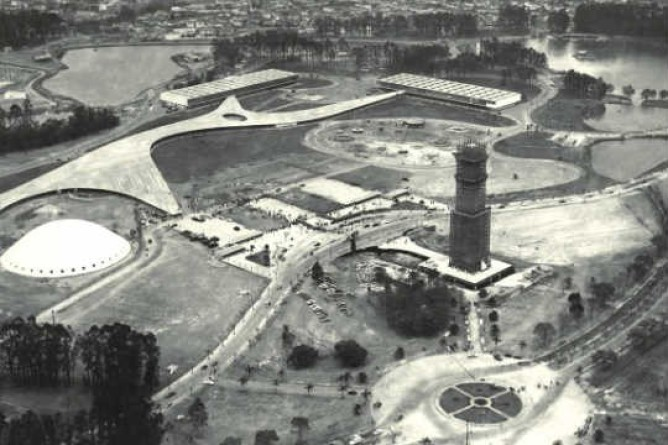

Welcome to Ibirapuera Park!
Upcoming Events
C6 Fest 2026 | May 21–24
Arena Brasileira | June 13 – July 19
São Paulo Coffee Festival 2026 | June 28
Weather Forecast
History of Ibirapuera Park
Ibirapuera Park, located in the heart of São Paulo, Brazil, is one of the most iconic urban parks in the world. It was inaugurated in 1954 to commemorate the 400th anniversary of the city. The park was designed by the renowned landscape architect Roberto Burle Marx and features a blend of modernist architecture and lush greenery. Over the years, Ibirapuera Park has become a cultural hub, hosting numerous events, concerts, and exhibitions. It is also home to several museums, including the Museum of Modern Art and the Afro-Brazil Museum. With its beautiful lakes, walking trails, and recreational facilities, Ibirapuera Park continues to be a beloved destination for both locals and tourists alike.
